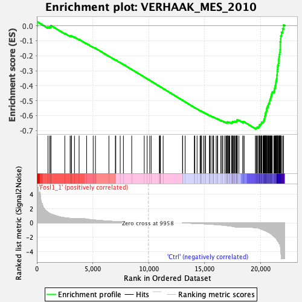
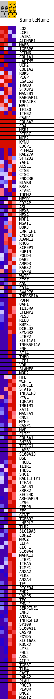
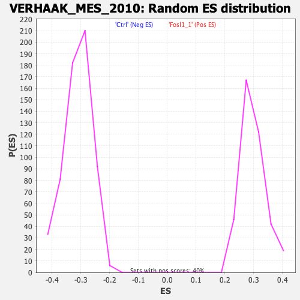

| | | Dataset | ranaseq_carol_ns_sel_exprs.ranaseq_carol_ns_sel_phenotype.cls
#Fosl1_1_versus_Ctrl |
| Phenotype | ranaseq_carol_ns_sel_phenotype.cls#Fosl1_1_versus_Ctrl |
| Upregulated in class | Ctrl |
| GeneSet | VERHAAK_MES_2010 |
| Enrichment Score (ES) | -0.68724936 |
| Normalized Enrichment Score (NES) | -2.217797 |
| Nominal p-value | 0.0 |
| FDR q-value | 0.0 |
| FWER p-Value | 0.0 |
Table: GSEA Results Summary

Fig 1: Enrichment plot: VERHAAK_MES_2010
Profile of the Running ES Score & Positions of GeneSet Members on the Rank Ordered List
| SYMBOL | TITLE | RANK IN GENE LIST | RANK METRIC SCORE | RUNNING ES | CORE ENRICHMENT | | 1 | LOX | LOX | 30 | 5.000 | 0.0269 | No |
| 2 | LCP2 | LCP2 | 996 | 1.476 | -0.0086 | No |
| 3 | LAIR1 | LAIR1 | 1155 | 1.331 | -0.0083 | No |
| 4 | ALDH3B1 | ALDH3B1 | 1256 | 1.250 | -0.0058 | No |
| 5 | MAFB | MAFB | 1259 | 1.248 | 0.0012 | No |
| 6 | IGFBP6 | IGFBP6 | 2499 | 0.706 | -0.0511 | No |
| 7 | PTPN6 | PTPN6 | 2976 | 0.632 | -0.0692 | No |
| 8 | COL1A1 | COL1A1 | 3080 | 0.631 | -0.0703 | No |
| 9 | LAPTM5 | LAPTM5 | 3093 | 0.631 | -0.0673 | No |
| 10 | UCP2 | UCP2 | 3368 | 0.602 | -0.0763 | No |
| 11 | COL1A2 | COL1A2 | 3781 | 0.602 | -0.0916 | No |
| 12 | RBKS | RBKS | 4453 | 0.527 | -0.1192 | No |
| 13 | PIGP | PIGP | 5040 | 0.415 | -0.1434 | No |
| 14 | LGALS3 | LGALS3 | 5240 | 0.386 | -0.1503 | No |
| 15 | TRADD | TRADD | 6445 | 0.240 | -0.2036 | No |
| 16 | STXBP2 | STXBP2 | 7022 | 0.189 | -0.2287 | No |
| 17 | MAN2B1 | MAN2B1 | 7062 | 0.184 | -0.2295 | No |
| 18 | RABGAP1L | RABGAP1L | 7457 | 0.151 | -0.2465 | No |
| 19 | TNFAIP8 | TNFAIP8 | 7743 | 0.135 | -0.2587 | No |
| 20 | NPC2 | NPC2 | 8485 | 0.088 | -0.2919 | No |
| 21 | IFI30 | IFI30 | 9607 | 0.012 | -0.3427 | No |
| 22 | ITGB2 | ITGB2 | 9864 | 0.006 | -0.3543 | No |
| 23 | C5AR1 | C5AR1 | 10100 | 0.000 | -0.3650 | No |
| 24 | COL8A2 | COL8A2 | 10227 | 0.000 | -0.3707 | No |
| 25 | CD4 | CD4 | 10958 | 0.000 | -0.4039 | No |
| 26 | MSR1 | MSR1 | 11003 | 0.000 | -0.4059 | No |
| 27 | PTPRC | PTPRC | 11038 | 0.000 | -0.4075 | No |
| 28 | NCF2 | NCF2 | 11043 | 0.000 | -0.4076 | No |
| 29 | KYNU | KYNU | 11054 | 0.000 | -0.4081 | No |
| 30 | CDCP1 | CDCP1 | 11299 | 0.000 | -0.4192 | No |
| 31 | PTPN22 | PTPN22 | 13036 | -0.001 | -0.4980 | No |
| 32 | RAB27A | RAB27A | 13040 | -0.001 | -0.4982 | No |
| 33 | SFT2D2 | SFT2D2 | 13263 | -0.007 | -0.5082 | No |
| 34 | YAP1 | YAP1 | 14086 | -0.066 | -0.5452 | No |
| 35 | ACSL1 | ACSL1 | 14132 | -0.069 | -0.5468 | No |
| 36 | CTSB | CTSB | 14332 | -0.083 | -0.5554 | No |
| 37 | CTSC | CTSC | 14598 | -0.104 | -0.5669 | No |
| 38 | FNDC3B | FNDC3B | 14667 | -0.110 | -0.5693 | No |
| 39 | BLVRB | BLVRB | 14676 | -0.110 | -0.5691 | No |
| 40 | RRAS | RRAS | 14715 | -0.113 | -0.5702 | No |
| 41 | STAB1 | STAB1 | 14890 | -0.125 | -0.5774 | No |
| 42 | TRPM2 | TRPM2 | 15024 | -0.134 | -0.5827 | No |
| 43 | MFSD1 | MFSD1 | 15089 | -0.138 | -0.5848 | No |
| 44 | CD2AP | CD2AP | 15447 | -0.174 | -0.6000 | No |
| 45 | ASL | ASL | 15449 | -0.174 | -0.5991 | No |
| 46 | HEXB | HEXB | 15468 | -0.176 | -0.5989 | No |
| 47 | HEXA | HEXA | 15571 | -0.187 | -0.6025 | No |
| 48 | NRP1 | NRP1 | 15730 | -0.203 | -0.6085 | No |
| 49 | MGAT1 | MGAT1 | 15777 | -0.209 | -0.6094 | No |
| 50 | DOK3 | DOK3 | 15815 | -0.214 | -0.6099 | No |
| 51 | LRRFIP1 | LRRFIP1 | 16039 | -0.236 | -0.6187 | No |
| 52 | CYBRD1 | CYBRD1 | 16148 | -0.250 | -0.6222 | No |
| 53 | ADAM12 | ADAM12 | 16180 | -0.253 | -0.6222 | No |
| 54 | RHOG | RHOG | 16445 | -0.289 | -0.6325 | No |
| 55 | SCPEP1 | SCPEP1 | 16549 | -0.304 | -0.6355 | No |
| 56 | FURIN | FURIN | 16598 | -0.312 | -0.6359 | No |
| 57 | POLD4 | POLD4 | 16757 | -0.339 | -0.6412 | No |
| 58 | DAB2 | DAB2 | 16900 | -0.363 | -0.6456 | No |
| 59 | AMPD3 | AMPD3 | 16924 | -0.367 | -0.6445 | No |
| 60 | RAB32 | RAB32 | 17001 | -0.381 | -0.6459 | No |
| 61 | CASP4 | CASP4 | 17038 | -0.388 | -0.6453 | No |
| 62 | WWTR1 | WWTR1 | 17052 | -0.391 | -0.6437 | No |
| 63 | CTSZ | CTSZ | 17070 | -0.396 | -0.6422 | No |
| 64 | GRN | GRN | 17155 | -0.410 | -0.6437 | No |
| 65 | CD14 | CD14 | 17206 | -0.418 | -0.6436 | No |
| 66 | SWAP70 | SWAP70 | 17269 | -0.432 | -0.6440 | No |
| 67 | TNFRSF1A | TNFRSF1A | 17424 | -0.466 | -0.6484 | No |
| 68 | PDPN | PDPN | 17456 | -0.474 | -0.6471 | No |
| 69 | UAP1 | UAP1 | 17461 | -0.475 | -0.6446 | No |
| 70 | IL15RA | IL15RA | 17477 | -0.480 | -0.6426 | No |
| 71 | EFEMP2 | EFEMP2 | 17509 | -0.488 | -0.6412 | No |
| 72 | PLS3 | PLS3 | 17576 | -0.509 | -0.6413 | No |
| 73 | RELB | RELB | 17618 | -0.519 | -0.6403 | No |
| 74 | RBMS1 | RBMS1 | 17694 | -0.542 | -0.6406 | No |
| 75 | DCBLD2 | DCBLD2 | 17717 | -0.553 | -0.6385 | No |
| 76 | SYNGR2 | SYNGR2 | 17814 | -0.588 | -0.6395 | No |
| 77 | LTBP2 | LTBP2 | 17845 | -0.599 | -0.6375 | No |
| 78 | SLC11A1 | SLC11A1 | 17892 | -0.599 | -0.6362 | No |
| 79 | TNFRSF11A | TNFRSF11A | 17893 | -0.599 | -0.6328 | No |
| 80 | ENG | ENG | 17895 | -0.599 | -0.6295 | No |
| 81 | ST14 | ST14 | 17933 | -0.599 | -0.6278 | No |
| 82 | THBD | THBD | 18075 | -0.599 | -0.6308 | No |
| 83 | LCP1 | LCP1 | 18434 | -0.602 | -0.6437 | No |
| 84 | VDR | VDR | 18436 | -0.602 | -0.6403 | No |
| 85 | SLAMF8 | SLAMF8 | 18548 | -0.602 | -0.6420 | No |
| 86 | NOD2 | NOD2 | 19546 | -0.668 | -0.6835 | Yes |
| 87 | HFE | HFE | 19618 | -0.685 | -0.6828 | Yes |
| 88 | WIPF1 | WIPF1 | 19674 | -0.694 | -0.6814 | Yes |
| 89 | ARPC1B | ARPC1B | 19689 | -0.703 | -0.6781 | Yes |
| 90 | STAT6 | STAT6 | 19726 | -0.709 | -0.6757 | Yes |
| 91 | TNFAIP3 | TNFAIP3 | 19849 | -0.737 | -0.6771 | Yes |
| 92 | PYGL | PYGL | 19872 | -0.749 | -0.6739 | Yes |
| 93 | IQGAP1 | IQGAP1 | 19893 | -0.763 | -0.6705 | Yes |
| 94 | TMBIM1 | TMBIM1 | 19899 | -0.767 | -0.6664 | Yes |
| 95 | SAT1 | SAT1 | 19925 | -0.782 | -0.6631 | Yes |
| 96 | MAN2A1 | MAN2A1 | 19935 | -0.788 | -0.6590 | Yes |
| 97 | CNN2 | CNN2 | 20029 | -0.843 | -0.6585 | Yes |
| 98 | MYH9 | MYH9 | 20066 | -0.867 | -0.6552 | Yes |
| 99 | CASP1 | CASP1 | 20087 | -0.882 | -0.6512 | Yes |
| 100 | MVP | MVP | 20100 | -0.891 | -0.6467 | Yes |
| 101 | CLIC1 | CLIC1 | 20133 | -0.913 | -0.6430 | Yes |
| 102 | COL5A1 | COL5A1 | 20235 | -0.973 | -0.6421 | Yes |
| 103 | SH2B3 | SH2B3 | 20275 | -0.993 | -0.6382 | Yes |
| 104 | TCIRG1 | TCIRG1 | 20284 | -0.999 | -0.6330 | Yes |
| 105 | LAMB1 | LAMB1 | 20326 | -1.032 | -0.6290 | Yes |
| 106 | S100A13 | S100A13 | 20327 | -1.032 | -0.6232 | Yes |
| 107 | DSE | DSE | 20365 | -1.054 | -0.6189 | Yes |
| 108 | FHOD1 | FHOD1 | 20377 | -1.064 | -0.6134 | Yes |
| 109 | IL1R1 | IL1R1 | 20381 | -1.069 | -0.6075 | Yes |
| 110 | THBS1 | THBS1 | 20398 | -1.082 | -0.6021 | Yes |
| 111 | SHC1 | SHC1 | 20429 | -1.093 | -0.5973 | Yes |
| 112 | RAB11FIP1 | RAB11FIP1 | 20451 | -1.106 | -0.5920 | Yes |
| 113 | ITGA4 | ITGA4 | 20454 | -1.109 | -0.5858 | Yes |
| 114 | LGALS1 | LGALS1 | 20466 | -1.122 | -0.5800 | Yes |
| 115 | SRPX2 | SRPX2 | 20520 | -1.157 | -0.5759 | Yes |
| 116 | SEC24D | SEC24D | 20530 | -1.165 | -0.5697 | Yes |
| 117 | ARHGAP29 | ARHGAP29 | 20552 | -1.183 | -0.5640 | Yes |
| 118 | LY96 | LY96 | 20565 | -1.199 | -0.5577 | Yes |
| 119 | CEBPB | CEBPB | 20573 | -1.206 | -0.5512 | Yes |
| 120 | FES | FES | 20586 | -1.212 | -0.5450 | Yes |
| 121 | GCNT1 | GCNT1 | 20662 | -1.275 | -0.5412 | Yes |
| 122 | TGFBR2 | TGFBR2 | 20664 | -1.278 | -0.5340 | Yes |
| 123 | LHFPL2 | LHFPL2 | 20705 | -1.318 | -0.5284 | Yes |
| 124 | TLR2 | TLR2 | 20717 | -1.327 | -0.5214 | Yes |
| 125 | SLC10A3 | SLC10A3 | 20759 | -1.355 | -0.5156 | Yes |
| 126 | COPZ2 | COPZ2 | 20809 | -1.400 | -0.5099 | Yes |
| 127 | MRC2 | MRC2 | 20811 | -1.403 | -0.5020 | Yes |
| 128 | ELF4 | ELF4 | 20859 | -1.446 | -0.4960 | Yes |
| 129 | CLCF1 | CLCF1 | 20884 | -1.464 | -0.4888 | Yes |
| 130 | S100A4 | S100A4 | 20916 | -1.503 | -0.4817 | Yes |
| 131 | MAPK13 | MAPK13 | 20937 | -1.528 | -0.4740 | Yes |
| 132 | LTBP1 | LTBP1 | 20977 | -1.582 | -0.4668 | Yes |
| 133 | ITGA5 | ITGA5 | 20995 | -1.615 | -0.4585 | Yes |
| 134 | TIMP1 | TIMP1 | 21019 | -1.640 | -0.4503 | Yes |
| 135 | ANXA2 | ANXA2 | 21058 | -1.695 | -0.4424 | Yes |
| 136 | PLK3 | PLK3 | 21195 | -1.870 | -0.4381 | Yes |
| 137 | ANXA4 | ANXA4 | 21241 | -1.930 | -0.4292 | Yes |
| 138 | TES | TES | 21253 | -1.957 | -0.4186 | Yes |
| 139 | PTGER4 | PTGER4 | 21314 | -2.033 | -0.4099 | Yes |
| 140 | EHD2 | EHD2 | 21320 | -2.040 | -0.3986 | Yes |
| 141 | VAMP5 | VAMP5 | 21364 | -2.131 | -0.3885 | Yes |
| 142 | TEC | TEC | 21379 | -2.148 | -0.3770 | Yes |
| 143 | FMNL1 | FMNL1 | 21401 | -2.152 | -0.3658 | Yes |
| 144 | SERPINE1 | SERPINE1 | 21444 | -2.262 | -0.3550 | Yes |
| 145 | EMP3 | EMP3 | 21469 | -2.325 | -0.3429 | Yes |
| 146 | ANXA1 | ANXA1 | 21470 | -2.327 | -0.3298 | Yes |
| 147 | TNFRSF1B | TNFRSF1B | 21500 | -2.419 | -0.3174 | Yes |
| 148 | SP100 | SP100 | 21502 | -2.423 | -0.3038 | Yes |
| 149 | S100A11 | S100A11 | 21526 | -2.486 | -0.2908 | Yes |
| 150 | CASP8 | CASP8 | 21535 | -2.525 | -0.2769 | Yes |
| 151 | FXYD5 | FXYD5 | 21552 | -2.588 | -0.2630 | Yes |
| 152 | SLC16A3 | SLC16A3 | 21618 | -2.631 | -0.2511 | Yes |
| 153 | RUNX2 | RUNX2 | 21631 | -2.689 | -0.2365 | Yes |
| 154 | LY75 | LY75 | 21641 | -2.728 | -0.2215 | Yes |
| 155 | FHL2 | FHL2 | 21662 | -2.802 | -0.2066 | Yes |
| 156 | ARSJ | ARSJ | 21688 | -2.868 | -0.1915 | Yes |
| 157 | ACPP | ACPP | 21734 | -2.991 | -0.1767 | Yes |
| 158 | TGFBI | TGFBI | 21757 | -3.092 | -0.1602 | Yes |
| 159 | TLR4 | TLR4 | 21764 | -3.155 | -0.1427 | Yes |
| 160 | CAST | CAST | 21765 | -3.156 | -0.1248 | Yes |
| 161 | P4HA2 | P4HA2 | 21767 | -3.184 | -0.1069 | Yes |
| 162 | PLAU | PLAU | 21807 | -3.644 | -0.0881 | Yes |
| 163 | PROCR | PROCR | 21818 | -3.729 | -0.0675 | Yes |
| 164 | PLAUR | PLAUR | 21880 | -4.804 | -0.0431 | Yes |
| 165 | BNC2 | BNC2 | 21985 | -5.000 | -0.0196 | Yes |
| 166 | MGST2 | MGST2 | 22069 | -5.000 | 0.0049 | Yes |
Table: GSEA details [plain text format]

Fig 2: VERHAAK_MES_2010
Blue-Pink O' Gram in the Space of the Analyzed GeneSet

Fig 3: VERHAAK_MES_2010: Random ES distribution
Gene set null distribution of ES for VERHAAK_MES_2010